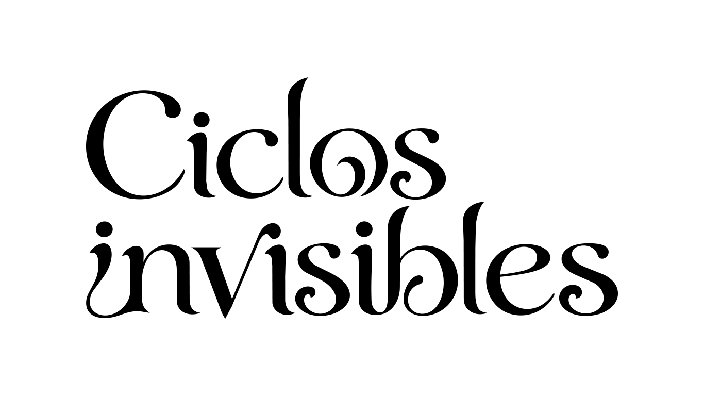
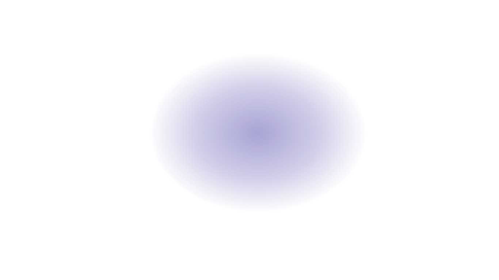

01 — TU CUERPO PRODUCE INFORMACIÓN

Hay cambios que ocurren antes de que puedas verlos.
Sigue una sensación y descubre algunas relaciones
que pueden existir detrás de ella.

DESLIZA PARA ENTRAR EN LA RED ↓